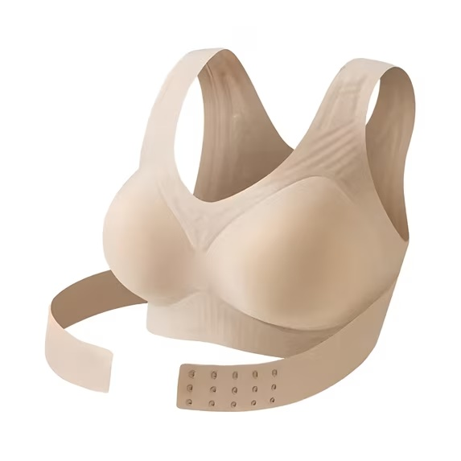

Sutien de Damă cu Corector de Postură Bej și Negru
Sutienul de damă cu corector de postură integrat este un articol de lenjerie conceput pentru a combina susținerea bustului cu un design special adaptat zonei spatelui.
Prețul și stocul sunt afișate conform catalogului furnizat. Confirmă disponibilitatea, cantitatea și condițiile comerciale înainte de comandă.
DETALII PRODUS
Sutienul de damă cu corector de postură integrat este un articol de lenjerie conceput pentru a combina susținerea bustului cu un design special adaptat zonei spatelui. Prin construcția sa, produsul urmărește să ofere confort în timpul purtării și să favorizeze menținerea unei poziții mai aliniate a umerilor, fiind potrivit pentru integrarea în garderoba zilnică.
Sistemul de susținere din zona dorsală reprezintă elementul distinctiv al acestui model. Partea din spate este prevăzută cu o structură textilă extinsă, cu benzi de susținere dispuse astfel încât să distribuie tensiunea pe o suprafață mai mare. Această configurație este concepută pentru a încuraja o poziție mai dreaptă a umerilor și pentru a oferi stabilitate în timpul mișcărilor obișnuite.
Bretelele late și designul fără sârmă contribuie la confortul purtării, limitând presiunea concentrată în anumite zone. Cupele au o formă rotunjită, destinată susținerii și conturării naturale a bustului, iar materialul cu aspect neted permite purtarea sutienului sub diferite articole vestimentare.
Un alt avantaj îl reprezintă banda reglabilă de sub bust, prevăzută cu un sistem de închidere cu mai multe poziții. Aceasta permite ajustarea circumferinței în funcție de conformația corporală și de preferințele individuale. Construcția flexibilă facilitează adaptarea produsului la mișcările corpului, fiind concepută pentru utilizare în activitățile cotidiene.
Sutienul este prezentat în două variante cromatice, bej și negru, culori versatile, potrivite pentru diferite ținute. Varianta bej poate fi purtată discret sub îmbrăcămintea deschisă la culoare, în timp ce modelul negru oferă un aspect clasic.
Din perspectiva distribuției B2B, produsul poate completa oferta magazinelor de lenjerie intimă, articole vestimentare pentru femei, comercianților en-gros și platformelor marketplace. Combinația dintre susținerea bustului, banda ajustabilă și construcția specială a spatelui îl diferențiază de modelele convenționale de sutiene.
Caracteristici principale
- Corector de postură integrat: structură dorsală concepută pentru a încuraja o poziționare mai aliniată a umerilor.
- Susținere pentru bust: cupe cu formă anatomică, adaptate conturului natural al sânilor.
- Bretele late: contribuie la distribuirea presiunii și la stabilitatea sutienului.
- Design fără sârmă: construcție destinată unei purtări confortabile, fără armături metalice sub cupe.
- Bandă reglabilă: sistem de închidere cu mai multe poziții pentru ajustarea circumferinței sub bust.
- Spate cu susținere extinsă: structură textilă care acoperă o suprafață mai mare a zonei dorsale.
- Material flexibil: conceput pentru adaptarea la mișcările naturale ale corpului.
- Cupe cu aspect neted: permit conturarea bustului sub diferite articole vestimentare.
- Design ergonomic: formă adaptată purtării zilnice și susținerii zonelor principale ale bustului.
- Susținere fără accesorii suplimentare: funcțiile de susținere a bustului și de ghidare a posturii sunt integrate în același articol vestimentar.
- Culori disponibile: bej și negru.
- Întreținere practică: poate fi curățat conform instrucțiunilor de pe eticheta produsului.
Comandă și informații
Site-ul funcționează în regim de catalog B2B. Nu există plată online sau coș de cumpărături. Produsul este momentan indisponibil.
Discută pe WhatsApp →